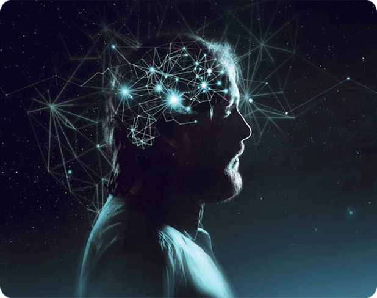
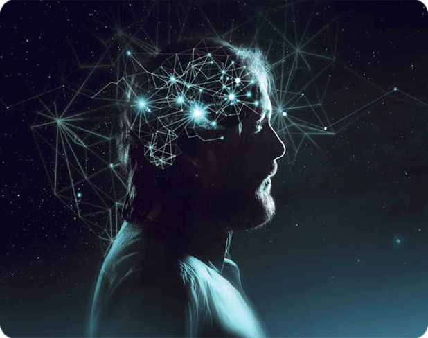

Записи мастер-класса внизу страницы
«Трансперсональная аналитика»
Старт курса:20 ноября, в 19:00 мск
Авторы курса: Анна Ролева и Вероника Юрина
Записаться на курсЗаписи мастер-класса внизу страницы
Старт курса:20 ноября, в 19:00 мск
Авторы курса: Анна Ролева и Вероника Юрина
Записаться на курс
Первая- полностью перезагрузить вашу жизнь с помощью прохождения и освоения нового инструмента самопознания и саморазвития, Трансперсональной аналитики
Вторая- получить новую специальность, с дипломом гос. образца, подтверждающим вашу квалификацию, и начать активно работать по новой специальности, трансформируя жизни людей с помощью этого инновационного инструмента

 



Полностью переосмыслите себя как личность и свой жизненный опыт
Выйдите на путь социальной реализации, зарабатывая на любимом деле, простроив корректные отношения и раскрыв свое предназначение
Станете мастером в трансперсональном анализе личности, основанном на системах дизайн человека и генные ключи
Освоите общий психологический модуль работы и базовые психологические технологии, необходимые для работы с клиентами
Получите диплом о профессиональной переподготовке по направлению Психология и сможете начать уверенно строить карьеру в этой сфере
Новички смогут начать консультировать и зарабатывать от 50 тыс руб в мес онлайн
Опытные консультанты смогут масштабировать свою частную практику за счет новых инструментов трансперсонального анализа и монетизации, получив возможность зарабатывать от 150 тыс руб в месяц
{kind=link}